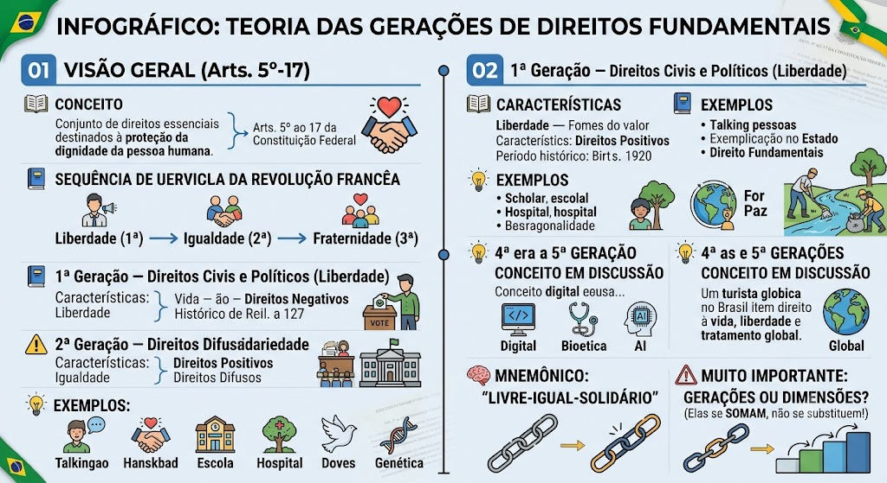

Sequência do Lema da Revolução Francesa
Sequência do Lema da Revolução Francesa
A doutrina clássica (Karel Vašák) organiza os direitos fundamentais em gerações (ou dimensões) que seguem a ordem do lema revolucionário:
Liberdade (1ª) → Igualdade (2ª) → Fraternidade (3ª)
Para Leigos – Regras de convivência conquistadas
Para Leigos – Regras de convivência conquistadas
Imagine que os direitos fundamentais são como 'regras de convivência' que a sociedade conquistou ao longo do tempo:
- 1ª geração – surgiu quando as pessoas queriam proteção contra o rei/poderoso: 'não me prenda sem motivo'.
- 2ª geração – veio quando o povo percebeu que só liberdade não bastava: precisava de escola, hospital e emprego.
- 3ª geração – surgiu quando vimos que somos todos vizinhos no mesmo planeta: precisamos cuidar do meio ambiente e da paz mundial.
Características
Características
Valor-fonte: Liberdade
Característica: Direitos negativos – exigem abstenção do Estado (não interferência).
Período: Final do século XVII e século XIX (revoluções liberais).
Exemplos: liberdade de expressão, reunião, associação, pensamento, igualdade perante a lei, direito de propriedade, segurança, devido processo legal, direito ao voto.
Exemplo do dia a dia
Exemplo do dia a dia
Você pode falar o que pensa (liberdade de expressão), se reunir com amigos (liberdade de reunião), criar uma associação de bairro (liberdade de associação), votar nas eleições (direito ao voto) e ter sua casa protegida (direito de propriedade) — tudo isso sem o Estado te impedir.
Características
Valor-fonte: Igualdade
Característica: Direitos positivos – exigem ação positiva do Estado (prestações).
Período: Século XX (pós-Revolução Industrial e 2ª Guerra Mundial).
Exemplos: educação, saúde, trabalho, moradia, alimentação, cultura, lazer, meio ambiente saudável, previdência social.
Exemplo do dia a dia
Seu filho tem direito a estudar na escola pública (educação), quando você fica doente vai ao SUS (saúde), você tem direito ao emprego com carteira assinada (trabalho), pode se aposentar (previdência) e ter uma casa digna (moradia). O Estado DEVE fornecer isso, não só permitir — é obrigação dele!
Características
Valor-fonte: Solidariedade / Fraternidade
Característica: Direitos difusos e coletivos – transcendem fronteiras nacionais.
Período: Final do século XX.
Exemplos: direito ao desenvolvimento, direito à paz (Bonavides classifica como 5ª geração), direito ao meio ambiente, direito de propriedade comum da humanidade, direito de comunicação, direitos do consumidor.
Exemplo do dia a dia
Você tem direito a respirar ar limpo (meio ambiente), o Brasil não pode poluir o Rio de Janeiro sem prejudicar outros países (meio ambiente é de todos), você pode reclamar quando compra um produto estragado (direito do consumidor), e o mundo quer a paz entre nações (direito à paz). São direitos que transcendem fronteiras — todos os povos precisam cooperar!
Características
Conceito em discussão: não há consenso doutrinário.
Paulo Bonavides aponta: democracia, informação, pluralismo.
Norberto Bobbio menciona: engenharia genética.
Exemplos: direito à privacidade digital, acesso à internet, proteção de dados pessoais, inteligência artificial justa, robótica ética.
Exemplo do dia a dia
Ninguém pode vazar suas fotos íntimas na internet (privacidade digital), você tem direito a usar a internet (acesso à internet), empresas não podem vender seus dados pessoais sem permissão (proteção de dados), e inteligência artificial não pode discriminar você (IA justa). São direitos novos para lidar com a era digital!
Características
Conceito em discussão: proposto por algumas correntes doutrinárias.
Objetivo: proteção do patrimônio genético humano, identidade cultural, democratização das comunicações.
Destaque: Direito à paz (segundo Bonavides, que considera a paz como 5ª geração).
🧠 MNEMÔNICO: 'LIVRE-IGUAL-SOLIDÁRIO'
🧠 MNEMÔNICO: 'LIVRE-IGUAL-SOLIDÁRIO'
Para lembrar a ordem das três primeiras gerações:
- 1ª → Liberdade (direitos civis/políticos)
- 2ª → Igualdade (direitos sociais/econômicos)
- 3ª → Solidariedade (direitos difusos/coletivos)
As gerações NÃO se substituem; são cumulativas e complementares.
Sobre a terminologia: 'gerações' ou 'dimensões'?
Sobre a terminologia: 'gerações' ou 'dimensões'?
Embora a expressão 'gerações' seja consagrada, muitos doutrinadores preferem 'dimensões' para evitar a ideia de que uma substitui a outra. O importante é saber que elas se somam.
Mapa-mental
Material de estudo: Teoria das Gerações
Material complementar · Ver fonte no GitHub
Dicas e Mnemônicos
Mapa-mental
